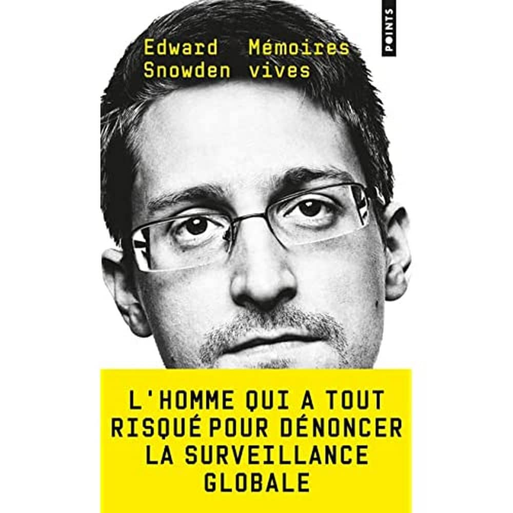
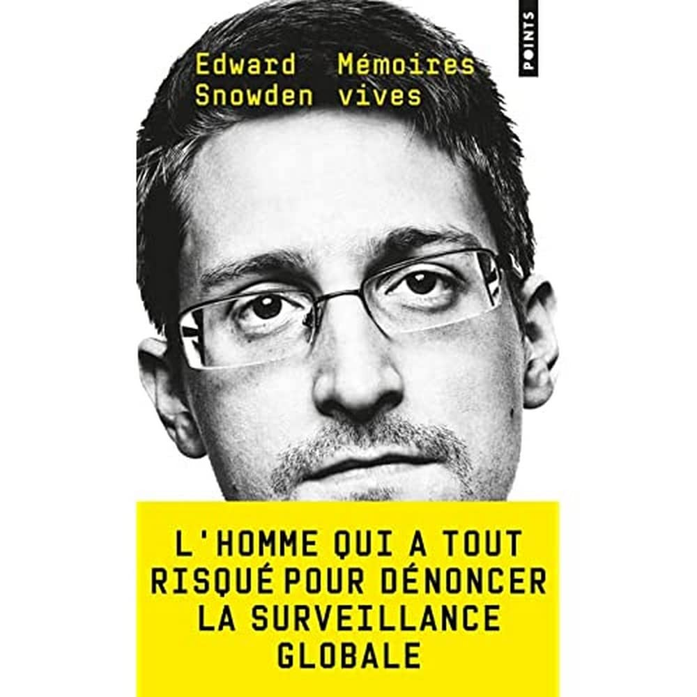

Actuellement étudiante en L1 de la licence Informatique à l'IED Paris 8
Baccalauréat général
Brevet mention bien
Le PSC1 (Prévention et Secours Civiques de niveau 1) est une formation de base aux premiers secours en France.
Formation officielle en ligne avec attestation de suivi des 4 modules
Depuis 2023 je garde de nombreux animaux
Découverte de divers services de l'entreprise tels que le service après-vente et la modélisation, ainsi que le service téléphonique.
Découverte de la société et de ses partenaires comme Tyrex, spécialisé par exemple dans la décontamination de clés USB.
| Compétence | Niveau | Expérience / Remarques |
|---|---|---|
| Informatique | Avancé | Projets scolaires et personnels |
| Mathématiques | Bon | Travail scolaire |
| Physique-Chimie | Bon | Travail scolaire |
| Français | Courant | Langue maternelle |
| Anglais | Niveau scolaire | Apprentissage scolaire |
| Espagnol | Niveau scolaire | Apprentissage scolaire |
Je suis passionnée par les jeux vidéo et je joue à tout type de jeux : Valorant, Assassin’s Creed, Dofus, etc.
Je suis également passionnée par l’informatique, particulièrement la cybersécurité. Sur mon temps libre, je pratique sur TryHackMe, me tiens informée via Internet et LinkedIn, et je lis des ouvrages sur le sujet, comme "Mémoire Vive" d’Edward Snowden, qui raconte son parcours de la CIA et NSA vers le rôle de lanceur d’alerte, et son influence sur le RGPD européen.
En ce moment, je suis également le MOOC Elements of AI.

 


Voici une courte vidéo où je me présente et parle de mes intérêts en informatique :